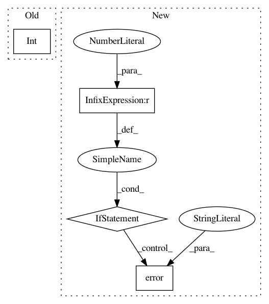

70377c624fdc514cd5897985c67c922cba613c1d,foreman/data_refinery_foreman/surveyor/transcriptome_index.py,TranscriptomeIndexSurveyor,discover_species,#TranscriptomeIndexSurveyor#,259
Before Change
// If number_of_organisms isn"t specified, default to surveying
// all organisms in the division.
try:
number_of_organisms = int(
SurveyJobKeyValue
.objects
.get(survey_job_id=self.survey_job.id,
key__exact="number_of_organisms")
.value
)
except SurveyJobKeyValue.DoesNotExist:
number_of_organisms = -1
logger.info("Surveying %s division of ensembl.",
After Change
for species in specieses:
all_new_species.append(self._generate_files(species))
if len(all_new_species) == 0:
logger.error("Unable to find any species!",
ensembl_division=ensembl_division,
organism_name=organism_name)
return all_new_species
In pattern: SUPERPATTERN
Frequency: 3
Non-data size: 4
Instances
Project Name: AlexsLemonade/refinebio
Commit Name: 70377c624fdc514cd5897985c67c922cba613c1d
Time: 2018-08-27
Author: kurt.wheeler91@gmail.com
File Name: foreman/data_refinery_foreman/surveyor/transcriptome_index.py
Class Name: TranscriptomeIndexSurveyor
Method Name: discover_species
Project Name: OpenNMT/OpenNMT-py
Commit Name: d5a75ba09ae0595ca284fd806475eb8d3f771387
Time: 2017-01-17
Author: adam.paszke@gmail.com
File Name: word_language_model/generate.py
Class Name:
Method Name: